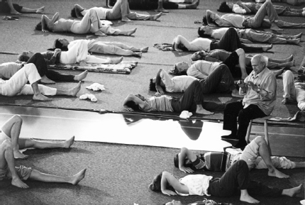

Feldenkrais for Actors
In our work there are elements which are mysterious and elements which are precise. I think we both share the desire, and even the need, to reduce that element of obscurity in theatre practice which depends on unknowables like ‘inspiration’ and ‘genius’ to a minimum and to make the craft of our profession as clear as possible.
The very foundation of the work for every actor is their own body – and nothing is more concrete… In Moshe Feldenkrais, I have eventually met someone from a scientific background, who has an all-encompassing mastery of his subject. He has studied the body in movement with a precision that I have never found anything like anywhere else.
For him, the body is a whole. Starting from this concept, he has developed his teaching method in which much of both Eastern and Western systems can be found. Through the workshops that he has led all through his life, in Europe as well as in the United States, he has been able to put together hundreds of exercises of exceptional value.
From a letter by Peter Brook, 1978
(translated from French by Victoria Worsley)
Santa Juan Bautista, Northern California, June 1973. It is very hot. Gathered in a large warehouse in the fields are members of Peter Brook’s company of actors who have been travelling through Africa for the last year, improvising on a carpet in villages and towns, seeking to find a totally new form of ‘universal’ theatre and developing a show based on the myth of The Conference of the Birds; members of El Teatro Campesino, a politically based theatre company formed in response to the plight of migrant farmworkers in California; and a few other artists including dancer Frank Wildman, then aged about twenty, now Dr Frank Wildman, a highly experienced Feldenkrais trainer.
This is the first day of an eight-week workshop lead by a sixty-nine-year-old nuclear physicist with a background in engineering and a second-degree black belt in Judo. Dr Moshe Feldenkrais is a man of extraordinary intelligence, with a great breadth of understanding, enormous curiosity and the capacity to transform discoveries in the fields of neuroscience, psychology and human development into practical ways of enabling others to develop their potential through movement. In the first lesson he invites the actors to stand on their hands, bend one knee so one foot can be placed on the wall, lengthen the other leg to the ceiling, push with that foot on the wall and twist the chest until they can take one hand from the floor and put it behind their back. No one can do it except the actor Yoshi Oida.
I don’t know how Peter Brook and Moshe Feldenkrais met, and my search to find out has yielded no complete answer so far.1 In the letter quoted above, it sounds like Brook may have been on a search for someone with the kind of understanding Feldenkrais had, and been introduced to him or stumbled across him somehow. But when and how?
Perhaps it’s worth a little detour here to sketch in some of Moshe Feldenkrais’s extraordinary story up to that point. He was born into a Hasidic community in a Jewish area of Russia, now Ukraine. Hasidism has a life-affirming tradition of healers and while Feldenkrais was not a religious man, he clearly felt an allegiance with the wisdom of his forebears. The Jews were massacred in that area more than once, first by the Russians and then by the Germans, so, aged fourteen, Feldenkrais set out on foot, without his family, to travel to the British Mandate for Palestine, gathering more and more young people as he went. There he worked hard labouring to help build Tel Aviv as well as studying both at high school and on his own. He had a good grasp of higher mathematics and was employed by the British to help map Palestine, as he was one of the few people there who could do the necessary ‘Gaussian Distribution of Errors’. While he was there he also worked out how to fight for his life unarmed against an armed attack,2 and even wrote a handbook on self-defence for the early Jewish defence force (The Haganah). He left Palestine to study engineering and gain his doctorate at the Sorbonne in Paris, and then moved on to nuclear physics. He was working on a particle accelerator to split the atom in the laboratory of Joliot-Curie when the war broke out.3
It was in Paris that Feldenkrais met Jigaro Kano, the founder of Judo.4 Kano was impressed with his little booklet on self-defence and, seeing in Feldenkrais someone who could help bring his ideas to the West, persuaded him to study Judo. Feldenkrais was among the first Westerners to gain a second-degree black belt, wrote several books on Judo5 and co-founded the Judo club of France (still in existence today). Indeed, there is much in the Feldenkrais Method that is drawn from his understanding of practising and teaching Judo, and we will see something of the usefulness of martial-arts ideas for actors in this book too. It is also good to keep sight of the notion that, while the Method uses a lot of small, slow movement, it is for the sake of learning and not for the sake of always moving slowly and gently. The Method facilitates all kinds of action, including sports and fighting – indeed, Feldenkrais’s interest lay in enabling people to find their ‘potency’ and live more fully.
Feldenkrais came to the UK fleeing the Nazis’ advance, clasping the nuclear secrets and a jar of heavy water from the laboratory, and was recruited by the British Admiralty to help with sonar research.6 He also trained a British battalion in strangulation techniques – you can still buy his handbook!7 During this period he continued to work with his own old footballing knee injury (torn cruciate ligaments and damaged cartilage for which there was no neat keyhole surgery in those days), and was also working on the ways of learning through movement that led to the development of the Method. In 1949 he wrote his first landmark book on these ideas, Body and Mature Behaviour. In 1951 he was asked back to the newly created state of Israel to work for the military and answered the call, but at the same time he also began giving lessons to the President, Ben Gurion, who soon found many opportunities to talk about Feldenkrais and his Method. There is a famous photograph of Ben Gurion standing on his head on the beach – something Feldenkrais had taught him – and Garet Newell told me a saying that puts it well: ‘Feldenkrais put Ben Gurion on his head and Ben Gurion put Feldenkrais on his feet.’ From this time, Feldenkrais finally devoted himself entirely to the development of this aspect of his work.
To come back now to the question we began with – how and why Feldenkrais and Peter Brook met – the latter had started working in the theatre in 1943, was already Director of Productions at the Royal Opera House by 1947, and went to the Royal Shakespeare Company in 1950, so there was time for him and Feldenkrais to meet each other in the UK professionally, socially or perhaps even through their shared interest in a philosopher called Gurdjieff.8
By the time of the Santa Juan Bautista workshop in 1973, Feldenkrais had already worked with Peter Brook’s International Centre for Theatre Research (CIRT) on a few occasions since its inception in 1970/1, and would continue to work at its new home at the Bouffes Du Nord in Paris every May for some years. According to Brook’s letter, he was still teaching actors at Bouffes Du Nord in 1978. However, soon after the Santa Juan Bautista workshop, he also began teaching on the first professional training programme in the US. This was in San Francisco in 1975–8. A second followed in Amherst starting in 1980, which was attended by over two hundred students. The trainings ran for nine weeks a year for four years each, but Feldenkrais only completed the first two years of the Amherst training and died after a series of strokes in 1984. His assistants – from among the small group he had already previously trained in Israel – completed the training between them, sowing the seeds for one of the most sophisticated approaches to human development today.
This Method can enable those with cerebral palsy (even tiny children), stroke or other nervous-system disorders, as well as those who just want to recover from injury or get out of chronic pain. It can also benefit musicians, dancers, actors, singers, martial artists and sportspeople of all kinds, or those who simply want to enjoy their daily lives more fully. He was – and in some ways still is – ahead of his time. Some of the better known who have experienced his or his descendants’ work in the performance world include Helen Mirren (who was in the Peter Brook company for a while), Yehudi Menuhin, Neil Young, Francis Fisher and Whoopi Goldberg.
I have only sketched in some of Moshe Feldenkrais’s extraordinary life experience but you can read about it in much more detail.9 What I really want to spend time with is his connection with actors and how and why his Method got into the acting world – and in the UK especially.
I began with this first lesson of standing on the hands at the start of the Santa Juan Bautista workshop because this and the other workshops he did for Peter Brook’s company form the main point of entry for the Feldenkrais Method into the UK performance world. But what was he aiming to bring out of the actors with this very difficult lesson? Does it mean the Method is just to help actors do clever tricks and gymnastics? It is important to understand that these kind of lessons are not the norm in the Method; in fact, while there are many lessons that are difficult in many ways, this one is considerably more physically challenging than any I have come across. Feldenkrais was given to saying he created conditions for you to learn how to do the thing you already know, in another way (which is an idea unpacked later in this book), because being able to make a choice about how to do the simplest of things is so much what an actor needs. So reaching, pushing, pulling, standing, sitting, walking, jumping and so on are the kinds of things we find the lessons addressing more often than standing on your hands and doing the splits.
Frank Wildman told me that some of the workshop was concerned with exploring bird movements which were specifically relevant to The Conference of the Birds, but in general it went on being extremely difficult, with all kinds of rolling, including dive-rolling: Feldenkrais asked Yoshi Oida to dive-roll around a stick all the way down the room to illustrate how his centre of gravity was outside himself in this movement. I have heard a little of the way Feldenkrais liked to challenge these actors on a rare (currently unavailable) tape of one of the workshops at Bouffes du Nord in Paris, where Feldenkrais is clearly enjoying himself getting the actors to put one leg out, keep it there unmoving, but then turn towards the leg (not away), jump right over it with the other leg, and end up facing the other way. It is relatively easy to do badly but actually pretty difficult to do in the way he is asking (i.e. without moving the extended leg all over the place or dropping it lower). You can find a published version of this lesson amongst those he taught in a street named Alexander Yanai in Tel Aviv, but that was a class he taught for many years and you can find other pretty difficult lessons there too. In the Paris tapes, one or two of the actors are clearly rather good at it, and soon we hear them inventing all sorts of possibilities, like putting a leg on a table and jumping over it, and finding games which Feldenkrais finds very funny. He clearly loves and encourages that kind of the playfulness, and this may be a clue to what he is looking to do in that first lesson too. It is certainly one of the ways all the lessons in the Method work for actors, for as we will see, they require curiosity, spontaneity and creativity either to help solve a difficult puzzle (like that first lesson on the hands) or to find different possibilities at much more accessible levels of physical challenge. These are all qualities that an actor needs to develop too.
The other recordings from the Paris sessions are made up of more accessible lessons – albeit still on the more dynamic side – and anyone who has done much of the Feldenkrais Method would recognise them. So it is not that he only, or even usually, created this kind of challenge for actors. It is possible that he did so in the Santa Juan workshop to be sure he was taking the group (which included many physically adept people like Yoshi Oida and Frank Wildman) into an arena that was unusual enough to grab their attention and ensure that they definitely experienced something novel. This gives us another key element of the Method which is very important for actors, because they need a wide repertoire of possible ways of being. Most lessons in the Method do this in much less dramatic ways, but they still include movements that are reversed or asked for in unusual ways. I love seeing the drama students’ faces when they come up to standing after a Feldenkrais lesson and their eyes widen at some feeling of themselves they have simply never had before.
In that handstanding lesson, for example, it’s not so important that you can do it all. Just having a go invites you to feel what it is like to reverse your usual way of being: to put the weight down through your arms instead of your legs, to have your head and eyes near the floor instead of high up. Then, if you can do that much, you get to feel what it is like to move your back, chest, pelvis and legs in relation to fixed, weight-bearing arms and shoulders rather than the other way around, so when you come back to your feet with your head upright, you feel a clear difference in the way you stand, and in how and where your shoulders and arms hang – your sense of how you can use them is sometimes surprisingly new. You can see a video online (vimeo.com/25220704) where Frank Wildman does a lesson based on this with a performer – and the young man’s face is a picture afterwards: he can’t stop grinning and trying out what he can do.
There is also no way you can really do all of this upside-down lesson with physical strength alone. Of course, it takes some strength to support yourself on your hands at all, but it also involves finding out how you can balance in this novel situation; how you can feel where your legs are in the air; how to shift weight; which way to twist so that you can even think of taking a hand away. This also gets to more elements of the Method: how you balance and shift balance; how you operate within gravity and in relation to the ground; how you organise the whole of yourself more skilfully rather than just force or strain in unnecessary ways. These are all essential parts of the learning, whether the lesson is as dramatic as this or apparently simpler – like lifting a leg, reaching with an arm or rolling up to sit.
In this book I will be focusing on just a few of the more accessible lessons, but it is worth knowing that there are very challenging lessons amongst those Feldenkrais created. Always remember that improvement comes not so much from just being able to execute the instructions in the lessons, as from the way you are invited to explore and learn.
Peter Brook liked working with Moshe Feldenkrais because he had a more precise understanding of movement than anyone he knew, but it may also have been because Feldenkrais did not advocate a system with specific ways of doing things.10 The thinking his Method is built on is rigorous, but it is exploratory in its approach. This is another reason why it is so useful for actors. Actors don’t want to have to follow a set of rules or always stick to what is considered ‘correct’, because it gets in the way of spontaneity and creativity – and because they may want to be able to play all sorts of people who behave and move in all kinds of ways that simply don’t follow any rules. I remember Nicholas Hytner, then Artistic Director of the National Theatre, in a seminar on the role of movement directors many years ago saying that he didn’t want his actors ‘Methoded to death’. Peter Brook may have felt the same. You don’t come out of the Feldenkrais Method with a specific way of holding yourself or moving. You don’t come out with rules, but you do discover more about yourself and your potential. You do develop skill.
Along with the letter at the start of this chapter, this passage from John Heilpern’s book The Conference of the Birds about the great trip to Africa gave me a sense of what Peter Brook was responding to in Feldenkrais’s work:
Brook told me that if you watch any cat, it isn’t just that his body is so relaxed and expressive. It’s something more important than that. A cat actually thinks visibly. If you watch him jump on a shelf, the wish to jump and the action of jumping are one and the same thing. There’s no division. A thought animates his whole body. It’s in exactly the same way that all Brook’s exercises try to train the actor. The actor is trained to become so organically related within himself, he thinks completely with his body. He becomes one sensitive responding whole, like the cat.11
For me those last two sentences capture a great deal about the Feldenkrais Method too.
Monika Pagneux
From here I want to travel to another very significant piece of the story which involves the highly gifted movement teacher Monika Pagneux. She met Moshe Feldenkrais at one of his workshops at Peter Brook’s centre in Paris in 1975. Her great facility and understanding as a teacher came from a background that included working with dancer/teacher Mary Wigman, who in turn was a student of the movement analyst Rudolf Laban, but Feldenkrais’s work was to have a big impact on her.12 She never became a trained Feldenkrais practitioner, but she talked about him a great deal and shared a considerable amount of his work as part of her wonderful teaching at both the Jacques Lecoq school and in the years she was teaching alongside Philippe Gaulier, as well as during the years of teaching on her own that followed. I know because she taught me in Paris, 1984–6, and like many other UK performers it is through her I discovered the Feldenkrais Method. Her other students and their students in turn include many members of the well-known theatre group Théâtre de Complicité (now Complicite), and a whole host of other physical-theatre companies and performers that came out of the late 1970s, ’80s, ’90s, and into this millennium. Monika has never liked being interviewed about her work for books or articles so I was unable to persuade her to talk to me. She feels that movement is an experience that cannot be captured in writing. However, there is a precious documentary about her work which she was happy to make.13 I will discuss this later.
Some Key Feldenkrais Practitioners
Monika’s impact on this story is very great, but exposure to Monika wasn’t the only way that the Method arrived in the UK. The big professional trainings Feldenkrais taught in the USA from 1973 till his death in 1984 included a number of performers and dancers. Among them was Garet Newell, who came to the UK in the early 1980s. Garet talked to me about how she started out with an interest in choreography and trained in modern dance technique with Martha Graham and in the schools of Merce Cunningham and of José Límon in New York. She completed her masters in dance at New York University (1976) and also studied with the influential experimental dance teacher Anna Halprin in San Francisco. In the late 1970s, Garet met John Graham and taught ‘Gentle Dance’ with him while they were both students in Feldenkrais’s Amherst training. Her workshops with John Graham in London introduced her to a number of performers, some of whom would come to her Feldenkrais classes there years later. (Interestingly, back in the early 1970s it was John and Anna who had suggested Frank Wildman attend the Santa Juan Bautista workshop and join the training Feldenkrais taught in San Francisco soon after.)
Garet had already read Feldenkrais’s books during her masters, and now in San Francisco she met and had lessons with Feldenkrais practitioner Jerry Karzen. An accident during her masters had left her with pain and difficulty in moving. She told me that, although she had had lessons with very good Alexander teachers (including Walter Carrington on occasions when he came to London) and was intending to study to be an Alexander teacher herself, the lessons with Jerry Karzen went beyond her experience: ‘It touched something in me that said this is what I want to learn.’ She joined the Amherst training in 1980 and soon after came to the UK to take up an offer to teach at The Open Centre in Central London.
Garet has taught in the UK ever since and has run Professional Practitioner Trainings since 1987, which until very recently were the only ones in existence in the UK. That on its own, taking into account her appeal to performers as one of their own kind, would be enough to qualify her as significant in the development of the Feldenkrais Method in the UK performance world – though there was a very important development in 1987. In that year, along with Christopher Connolly, another graduate of the Amherst training who had come back to the UK, she was invited to the annual International Workshop Festival in London founded by Nigel Jamieson, at which they were asked to teach Feldenkrais as the ‘warm-up’ and ‘wind-down’ hours at the beginning and end of every day. Garet told me that she was very impressed with Nigel Jamieson for being aware of the Method at that time, for recognising its value to performers and for taking on something so little known when he could have gone a more well-trodden route. Nigel had been working in physical theatre for many years (in 1985 he won a Greater London Arts Award for his outstanding contribution to the fields of Dance and Physical Theatre). He had also worked with Monika Pagneux in Paris who he describes as ‘an immensely wise and sublime teacher’ and wanted to bring her along with many others to London ‘at a time when there were few chances to study forms other than text-based Western theatre traditions’. He also told me:
In addition to bringing Monika to London, we were keen to programme the work of British-based Feldenkrais practitioners, and encourage its integration into actor training and preparation in the UK. Feldenkrais seemed to offer a wonderful way of preparing and balancing the performer’s mind and body, across a number of disciplines that we promoted.
It was indeed a great thing that he did.
Dick McCaw PhD, who took over the Festival in 1993 and ran it until 2001, recognised the value in what Nigel had introduced and was able to develop it even further. Dick had already co-founded two major theatre companies: the Actors Touring Company in 1978 and the Medieval Players in 1981. He is now an independent researcher and senior lecturer at Royal Holloway, University of London, with many publications to his name. He completed the Professional Feldenkrais practitioner Training with Garet Newell at the same time as I did – in 2007. He said to me that he never even questioned the tradition of the Feldenkrais wind-down at the end of every day during the Workshop Festival (‘To me it was a no-brainer, of course we would continue the Feldenkrais!’), but that he could see that:
While this is a valid use of Feldenkrais’s work I think that he can offer much more to a sensitive movement artist – he offers us a way of understanding how to connect with another person’s movement… My years of difficulty with learning movement has helped me understand the wisdom of Feldenkrais’s statement that his Method is not about learning skills, techniques, procedures (though it does involve all three things), it is also learning how to learn.
And so from 1995 he invited Garet Newell to lead two or three day workshops every year the Festival ran. ‘I let the teaching stand for itself and let them make meaning out of it,’ Garet told me, but she also understands and can respond to the needs and questions of performers and from my experience of her teaching she will have been able to communicate the value of the work for them very effectively. Many actors, directors and movement directors, and even musicians and voice teachers, went through her workshops, taking an awareness of and interest in Feldenkrais into their own performance worlds. These included the renowned voice and singing teacher Venice Manley, with whom Garet also taught later. Some of them also went on to train as Feldenkrais teachers many years later.
Dick McCaw also began to offer a platform at the International Workshop Festival to three other Feldenkrais teachers establishing themselves in the field: Scott Clark, Andrew Dawson and Jos Houben, all graduates of the first two UK trainings. Scott Clark now led the wind-downs. He already had a considerable reputation as a dancer and as a dance teacher. He was a co-founder of the Siobhan Davies Dance Company and taught the company for its first six years. Since qualifying from the first UK Feldenkrais training in 1990, he has become one of the most proactive Feldenkrais practitioners in the UK, making an enormous difference to its profile amongst dancers, performers and the general public alike. He has been an important figure in developing the UK Feldenkrais Guild and its website and was its chair for many years. He has also taught on Professional Practitioner trainings for a number of years internationally, and now runs a new professional training in London. His private practice and his well-known classes and workshops attract many dancers and performers, as well as very diverse members of the general public.
Andrew Dawson taught his first public workshops during the Festival. His original training was in mime and dance, and he also studied with Jacques Lecoq, Philippe Gaulier and Monika Pagneux. He was on the second Feldenkrais training in the UK along with Jos, both qualifying in 1994. This is what he said to me about how he and Jos Houben first encountered the Method:
Jos and I came to the Method together. We were attending a directors’ workshop with Philippe Gaulier in Paris in the summer of 1987. Monika Pagneux was teaching the mornings and did these funny movements that made my arm get longer. By the end of the six weeks she had revealed that it came from Mr Feldi.
(This sounds exactly like my own experience with Monika back in 1984; I think it expresses very nicely how so many of us first came across the Method.) Since then Andrew has juggled his work as a Feldenkrais teacher with his ongoing career in performance, making his own unique contributions to the Feldenkrais world through his direction and movement direction (in places that include the Met Opera in New York, English National Opera and the Bristol Old Vic in the UK), and through his richly imaginative workshops for performers in the UK and the US. In addition, his talk on Ted Med, his beautifully crafted videos for the Feldenkrais Guild made with his son, Roman, and his own very interesting performance pieces and collaborations (that sometimes incorporate and always embody the work) continue to inspire.
Jos Houben trained with Lecoq and was a founder member of Complicite. He also worked as collaborator, performer and movement director on many shows with many companies and performers in the UK from the 1980s onwards. Jos led several weekend workshops at the International Workshop Festival and a week-long one in 1996. He has been the movement teacher at L’École International de Théâtre Jacques Lecoq in Paris for many years now, no doubt inspiring many with his playful and profoundly enabling approach. He also still performs.
It can clearly be said that when the Method first arrived in the UK, most performers and directors encountered it first either through Monika Pagneux or Garet Newell and the other Feldenkrais teachers at the International Workshop Festival. From these beginnings the work has spread to include teachers at quite a number of universities, acting, music and dance schools, as well as practitioners who work with professionals and/or bring the work to their movement direction, performance work and theatre-making. It is difficult to include all of the practitioners now in this field, as there are an ever-growing number doing good and important work that continues to spread awareness of the Method, but I must mention four or five others from the first two trainings in this country who made an impact on the performance world.
Maggy Burrowes, who qualified on the first training in 1990, will reappear in my chapter on voice because she came to the Feldenkrais Method as a singer looking for a way to work with voice. Her subsequent studies with Alison Bagnell and Jo Estill give her a unique skill set, and her VocalDynamix and Embodied Voice courses continue to attract both actors and singers (although her practice is not only focused on the voice, and she leads workshops on many themes). Maggy has worked with several performance groups, including The Festival Shakespeare Company, Re:Action Theatre and dance company CandoCo. She worked with The Right Size on several occasions, including during the development of The Play What I Wrote – a celebration of Morecambe and Wise – which debuted at the Liverpool Playhouse in 2001 and transferred successfully to the West End.
Shelagh O’Neill PhD, who also qualified in 1990, has a flourishing practice in the West of England, teaches workshops abroad and teaches on professional trainings. Her interest is not in performance per se, but in using the Feldenkrais Method to enable people to develop a clear sense of self. For performers, this is the foundation they work from. She has worked with, among others, string players and singers in the Welsh National Opera, students from Bristol Old Vic Theatre School, and performers from Kneehigh, and has touched many more through her teaching at Fooltime and Circomedia in Bristol in the 1990s.
Gunther Bisges teaches on many professional trainings internationally and still maintains a faithful following in his native Germany (where he created a series of classes for German TV), but he has his main practice in the UK now. I know from my own work with him that he enjoys working with performers and loves to find the playful edge of the Method. He has worked as a guest teacher for the Laban Centre, London, as well as the Performing Arts Academies in Munich, Hong Kong and the Royal Dramaten in Stockholm – and at one of his workshops not so long ago I recognised most of the movement department of one of the other top drama schools in London.
Thomas Kampe, Richard Cave and Libby Worth are exceptions in my list as they didn’t qualify until 2003, 1998 and 2011 respectively; however, they have in different ways been at the vanguard of the shift of the Method into the performance departments of universities and colleges.
Working as a team, Richard Cave PhD (Emeritus Professor) and Libby Worth PhD have developed courses in the Department of Drama and Theatre at Royal Holloway, University of London, which have included Feldenkrais since the late 1990s. Richard Cave also gave group and one-to-one Feldenkrais lessons at the Royal Shakespeare Company from 2003 to 2014 as part of the Artist Development Programme, instituted by Michael Boyd, both to enable skills and to help actors engage comfortably with the demands of particular roles. He now works regularly with a number of physical-theatre companies, including Theatre Ad Infinitum, and teaches Feldenkrais classes for Shakespeare’s Globe on the actor training programmes they deliver for the Guthrie Theatre (Minnesota) and the Department of Theatre Arts at Rutgers (New Jersey).
Libby trained with Anna Halprin and John Graham (the same influential dance teachers Garet Newell and Frank Wildman worked with). She discovered Feldenkrais through them and through Norma Leistiko, a long-term member of the San Francisco Dancers Workshop, who taught on Anna Halprin’s training programmes. Libby says that Norma:
taught anatomy through drawing and Feldenkrais lessons, with breaks for dancing to loud music and very often with classical music playing in the background. She was a wonderful teacher who made the training her own.
Back in the UK, Libby took part in some of Garet Newell’s earliest classes, and many years later her work with Richard Cave finally convinced her to take the training to become a Feldenkrais practitioner.
Thomas Kampe PhD has a dance background in the post-Laban tradition, Release and Contact Improvisation. He is important in this story because he has taught so extensively in many drama schools since the 1980s and has been at the forefront of the move into higher education – at Chichester, London Metropolitan and Bath Spa universities. He continues to put together interesting research projects around Feldenkrais and somatic-informed performance, impacting on many students and practitioners alike.
It’s also important to say that a number of performers or directors who have come across the Method have done a considerable amount to spread the work, even though they are not actually themselves practitioners. Director/performer Annabel Arden comes to mind: she studied extensively with Monika Pagneux and did part of the Feldenkrais training with Garet Newell. Also significant here is director, theatre-maker and teacher John Wright, who discovered the Method originally through Christopher Connolly and who also worked with Monika and did some workshops with Garet. Annabel was a founder member of Complicite and is well known for her work in theatre and opera. John founded Trestle Theatre and co-founded Told by an Idiot, and has used clowning and masks of many kinds in his teaching and directing for many years. Indeed he has taught, directed and worked with a huge swathe of the physical-theatre world, and his book Why Is That So Funny? is widely read (he is writing a second as I write this). He has been and still is a great advocate for the Method and attends weekly classes. Although not a Feldenkrais practitioner himself, his warm-ups and ways of approaching movement are strongly influenced by the work, and many a performer, inspired by John, has gone looking for a class, a workshop or a practitioner – some have even ended up training as practitioners themselves. I have the pleasure of teaching with John on occasion these days, and it was because of a workshop he asked me to teach at the Actors Centre that this book was commissioned. I know there are very many more spreading the word in their own way.
As I have said, these days there are Feldenkrais teachers like myself in a growing number of drama, dance and music schools as well as several universities in the UK. A number of us also work with professionals in the field of performance. Many are doing excellent work and I apologise for not listing everyone. Some of them will still crop up later in the book or in the ‘resources’ section where I have quoted them or pointed you towards their writing or research. Relatively speaking, we are still a select bunch, but Garet Newell’s two current trainings and the newer London training organised by Scott Clark, combined with those practitioners who come back to the UK after training abroad, are beginning to make more and more of an impact. Many thanks to Garet Newell, Frank Wildman, Dick McCaw, Maggy Burrowes, Andrew Dawson, Shelagh O’Neill, Scott Clark, Richard Cave, Libby Worth, Thomas Kampe, John Wright and Nigel Jamieson for talking to me, sending me biographical information, making suggestions or approving what I have written, and to Francois Combeau for making it possible for me to hear the tapes of Moshe Feldenkrais teaching at Bouffes Du Nord in Paris.

Dr Moshe Feldenkrais teaching at Amherst in the USA in the early 1980s
© International Feldenkrais Federation Archive